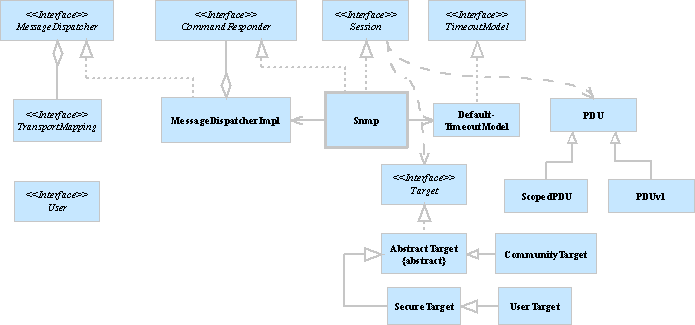

See: Description
| Interface | Description |
|---|---|
| CertifiedIdentity |
The
CertifiedIdentity interface describes an identity
that is associated with a client certificate fingerprint and a server
certificate fingerprint. |
| CommandResponder |
CommandResponder process incoming request, report and
notification PDUs. |
| MessageDispatcher |
The
MessageDispatcher interface defines common services of
instances that process incoming SNMP messages and dispatch them to
interested CommandResponder instances. |
| Session |
Session defines a common interface for all classes that
implement SNMP protocol operations based on SNMP4J. |
| Snmp.ReportHandler |
Interface for handling reports.
|
| Target |
A
Target interface defines an abstract representation of a
remote SNMP entity. |
| TimeoutModel |
The
TimeoutModel is the common interface for all models
of timing out a SNMP request. |
| TransportMapping<A extends Address> |
The
TransportMapping defines the common interface for SNMP
transport mappings. |
| User |
Common interface that has to be implemented by all user based
security models user classes.
|
| Class | Description |
|---|---|
| AbstractTarget |
A
AbstratTarget class is an abstract representation of a remote
SNMP entity. |
| CertifiedTarget |
The
CertifiedTarget class implements a SecureTarget
for usage with SecurityModels that support
secured connections using client and server certificates. |
| CommandResponderEvent |
The
CommandResponderEvent is fired by the
MessageDispatcher to listeners that potentially can process
the included request, report, or trap/notification. |
| CommunityTarget |
A
CommunityTarget represents SNMP target properties for
community based message processing models (SNMPv1 and SNMPv2c). |
| DefaultTimeoutModel |
The
DefaultTimeoutModel implements a timeout model that uses
constant timeouts between retries. |
| MessageDispatcherImpl |
The
MessageDispatcherImpl decodes and dispatches incoming
messages using MessageProcessingModel instances and encodes
and sends outgoing messages using an appropriate TransportMapping
instances. |
| MutablePDU |
The
MutablePDU is a container for a PDU
instance. |
| PDU |
The
PDU class represents a SNMP protocol data unit. |
| PDUv1 |
The
PDUv1 represents SNMPv1 PDUs. |
| ScopedPDU |
The
ScopedPDU class represents a SNMPv3 scoped PDU. |
| SecureTarget |
The
SecureTarget is an security model independent abstract class
for all targets supporting secure SNMP communication. |
| Snmp |
The
Snmp class is the core of SNMP4J. |
| SNMP4JSettings |
The
SNMP4JSettings class implements a central configuration
class of the SNMP4J framework. |
| TransportStateReference |
The
TransportStateReference class holds information defined by
RFC 5343 for the tmStateReference ASI elements. |
| UserTarget |
User based target for SNMPv3 or later.
|
| Enum | Description |
|---|---|
| SNMP4JSettings.ReportSecurityLevelStrategy |
Specifies the how the security level of retry requests after a REPORT PDU is
set.
|
| SNMP4JSettings.Snmp4jStatistics |
| Exception | Description |
|---|---|
| MessageException |
The
MessageException represents information about an exception
occurred during message processing. |
The org.snmp4j classes are capable of creating, sending, and
receiving SNMPv1/v2c/v3 messages. A SNMP message is composed of its message
header and its PDU payload. This package contains three main groups of classes
and interfaces:
The following UML package diagram illustrates the dependencies between the
packages of the core SNMP4J API. Users of the API normally only need to use the
org.snmp4j and the org.snmp4j.smi packages directly.
The following UML class diagram shows the most important classes of the org.snmp4j package and their relationships (relationships to other packages are not shown):.

To exchange a SNMP message with a remote system, that system has to be identified,
retransmission, and timeout policy information about the message exchange has
to be specified. A remote system is specified with SNMP4J by creating a
Target instance appropriate for the SNMP protocol to be used.
CommunityTarget has to be used
which provides community information in addition to the
address, retransmission, and timeout policy information defined by the
Target interface.
UserTarget has to be used instead. It extends
the SecureTarget abstract class and provides the following
User Based Security Model (USM) user information: security name,
security level, security model (i.e. USM), and authoritative engine ID.
Target instances and the PDU is
represented by one of the following classes:
PDUv1 (SNMPv1)
PDU (SNMPv2c)
ScopedPDU (SNMPv3)
PDU
instance and a Target instance have to be created.
import org.snmp4j.PDU;
import org.snmp4j.smi.*;
...
PDU pdu = new PDU();
pdu.add(new VariableBinding(new OID("1.3.6.1.2.1.1.1"))); // sysDescr
pdu.add(new VariableBinding(new OID("1.3.6.1.2.1.2.1"))); // ifNumber
pdu.setType(PDU.GETNEXT);
...
import org.snmp4j.ScopedPDU;
import org.snmp4j.smi.*;
...
ScopedPDU pdu = new ScopedPDU();
pdu.add(new VariableBinding(new OID("1.3.6.1.2.1.2.1"))); // ifNumber
pdu.add(new VariableBinding(new OID("1.3.6.1.2.1.2.2.1.10"))); // ifInOctets
pdu.add(new VariableBinding(new OID("1.3.6.1.2.1.2.2.1.16"))); // ifOutOctets
pdu.setType(PDU.GETBULK);
pdu.setMaxRepetitions(50);
// Get ifNumber only once
pdu.setNonRepeaters(1);
// set context non-default context (default context does not need to be set)
pdu.setContextName(new OctetString("subSystemContextA"));
// set non-default context engine ID (to use targets authoritative engine ID
// use an empty (size == 0) octet string)
pdu.setContextEngineID(OctetString.fromHexString("80:00:13:70:c0:a8:01:0d"));
...
import org.snmp4j.PDUv1;
...
PDUv1 pdu = new PDUv1();
pdu.setType(PDU.V1TRAP);
pdu.setGenericTrap(PDUv1.COLDSTART);
...
import org.snmp4j.ScopedPDU;
...
ScopedPDU pdu = new ScopedPDU();
pdu.setType(PDU.INFORM);
// sysUpTime
long sysUpTime = (System.nanoTime() - startTime) / 10000000; // 10^-7
pdu.add(new VariableBinding(SnmpConstants.sysUpTime, new TimeTicks(sysUpTime)));
pdu.add(new VariableBinding(SnmpConstants.snmpTrapOID, SnmpConstants.linkDown));
// payload
pdu.add(new VariableBinding(new OID("1.3.6.1.2.1.2.2.1.1"+downIndex),
new Integer32(downIndex)));
...
CommunityTarget target = new CommunityTarget();
target.setCommunity(new OctetString("public"));
target.setAddress(targetAddress);
target.setVersion(SnmpConstants.version1);
UserTarget target = new UserTarget();
target.setAddress(targetAddress);
target.setRetries(1);
// set timeout to 500 milliseconds -> 2*500ms = 1s total timeout
target.setTimeout(500);
target.setVersion(SnmpConstants.version3);
target.setSecurityLevel(SecurityLevel.AUTH_PRIV);
target.setSecurityName(new OctetString("MD5DES"));
SNMP message are sent with SNMP4J by using a instance of the SNMP
Session interface. The default implementation of this interface
is the Snmp class.
To setup a Snmp instance it is sufficient to call its
constructor with a TransportMapping instance. The transport
mapping is used by the SNMP session to send
(and receive) SNMP message to a remote systems by using a transport protocol,
for example the User Datagram Protocol (UDP).
A SNMP4J Snmp instance supports SNMP v1, v2c, and v3 by default.
By sub-classing Snmp other combinations of those SNMP protocol
versions can be supported.
With SNMP4J, SNMP messages can be sent synchronously (blocking) and
asynchronously (non-blocking). The Snmp class does not use
an internal thread to process responses on asynchronous and synchronous
requests. Nevertheless it uses the receiver threads of the transport mappings
to process responses.
Asynchronous responses are returned by calling a callback method
on an object instance that implements the ResponseListener
interface. The callback is carried out on behalf of the transport mapping
thread that received the response packet from the wire.
Thus, if the called method blocks, the delivery of synchronous and
asynchronous messages received on the listen port of that transport mapping
will be also blocked. Other transport mapping will not be affected.
Blocking can be avoided by either using synchronous messages only or by
decoupling the processing within the callback method.
import org.snmp4j.*;
...
Snmp snmp = new Snmp(new DefaultUdpTransportMapping());
snmp.listen();
...
ResponseEvent response = snmp.send(requestPDU, target);
if (response.getResponse() == null) {
// request timed out
...
}
else {
System.out.println("Received response from: "+
response.getPeerAddress());
// dump response PDU
System.out.println(response.getResponse().toString());
}
import org.snmp4j.*;
import org.snmp4j.event.*;
...
Snmp snmp = new Snmp(new DefaultUdpTransportMapping());
snmp.listen();
...
ResponseListener listener = new ResponseListener() {
public void onResponse(ResponseEvent event) {
// Always cancel async request when response has been received
// otherwise a memory leak is created! Not canceling a request
// immediately can be useful when sending a request to a broadcast
// address.
((Snmp)event.getSource()).cancel(event.getRequest(), this);
PDU response = event.getResponse();
PDU request = event.getRequest();
if (response == null) {
System.out.println("Request "+request+" timed out");
}
else {
System.out.println("Received response "+response+" on request "+
request);
}
}
};
snmp.sendPDU(request, target, null, listener);
...
SNMP4J receives SNMP messages through the listen port of transport mappings.
In order to be able to receive responses or requests, that port needs to be
set into listen mode. This has to be done by calling the listen()
method of the TransportMapping instance to start the transport
mappings internal listen thread. The internal thread is stopped and the listen
port is closed by calling the close() method on the
TransportMapping instance or the associated Snmp
instance.
The transport mapping just receives the SNMP mesage as a stream of bytes and
forwards the message to associated MessageDispatcher instances.
By default, SNMP4J uses one instance of the MessageDispatcherImpl
class for decoding and dispatching incoming messages. That instance is created
and used internally by the Snmp class.
The Snmp class processes responses to outstanding requests and
forwards PDUs of other SNMP messages to registered CommandResponder
listener instances. To receive SNMP messages it is thus sufficient to
TransportMapping and initialize its listen port
by calling TransportMapping.listen().
Snmp instance with the above
TransportMapping.
CommandResponder
interface and register it with the Snmp instance by
calling Snmp.addCommandResponder(CommandResponder).
When a unhandled SNMP message (thus a SNMP message where no corresponding
outstanding request exists) is received, then the
processPdu(CommandResponderEvent) method of the
CommandResponder will be called with the decoded PDU and
additional information about the received SNMP message provided by the
message processing model that has decoded the SNMP message.
import org.snmp4j.*;
import org.snmp4j.smi.*;
import org.snmp4j.mp.SnmpConstants;
...
TransportMapping transport =
new DefaultUdpTransportMapping(new UdpAddress("0.0.0.0/161"));
Snmp snmp = new Snmp(transport);
if (version == SnmpConstants.version3) {
byte[] localEngineID =
((MPv3)snmp.getMessageProcessingModel(MessageProcessingModel.MPv3)).createLocalEngineID();
USM usm = new USM(SecurityProtocols.getInstance(),
new OctetString(localEngineID), 0);
SecurityModels.getInstance().addSecurityModel(usm);
snmp.setLocalEngine(localEngineID, 0, 0);
// Add the configured user to the USM
...
}
snmp.addCommandResponder(this);
snmp.listen();
...
public synchronized void processPdu(CommandResponderEvent e) {
PDU command = e.getPdu();
if (command != null) {
...
}
}
Copyright © 2016 SNMP4J.org. All Rights Reserved.